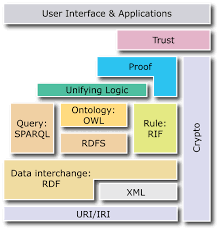

RDF
Algemeen
Een voor een zullen de concepten van Linked Data nader toegelicht worden. Het is misschien handig om de volgende afbeelding in je achterhoofd te nemen, waarbij de verschillende technologiën en concepten als lagen kunnen worden beschouwd over elkaar heen. Slecht een paar van deze technologiën zullen worden toegelicht aangezien ik niet geheel in de technologiën van Linked Data heb kunnen verdiepen.
Het RDF model en de triples
Om te beginnen, bekijk de video hieronder voor een korte uitleg over de bouwstenen van het RDF model, de zogenaamde triples en het concept van URI. Ik was vergeten te vermelden in de video, maar URI staat voor Uniform Resource Identifier. Vergeet bij het kijken van de onderstaande video niet de link met de sectie "Wat is Linked Data?", waarbij nadrukkelijk werd uitgelegd dat Linked Data een graph database is en daarbij de nadruk dus ligt op het modelleren van netwerken Dit is nadrukkelijk toegelicht in de sectie Wat is Linked Data. (vertices, edges) .